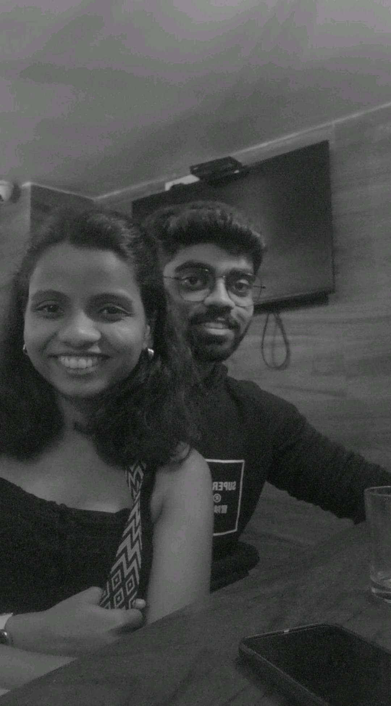
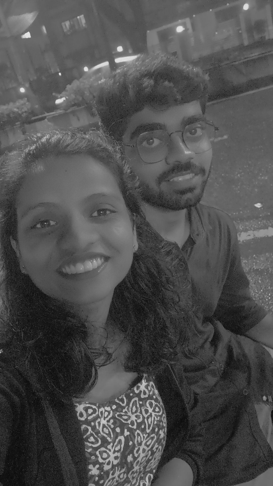
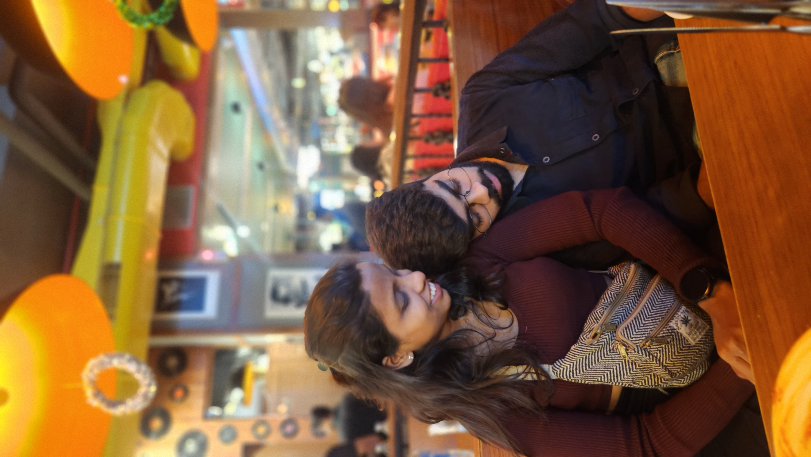
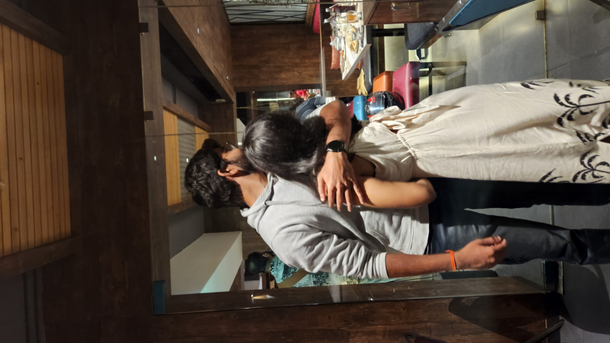
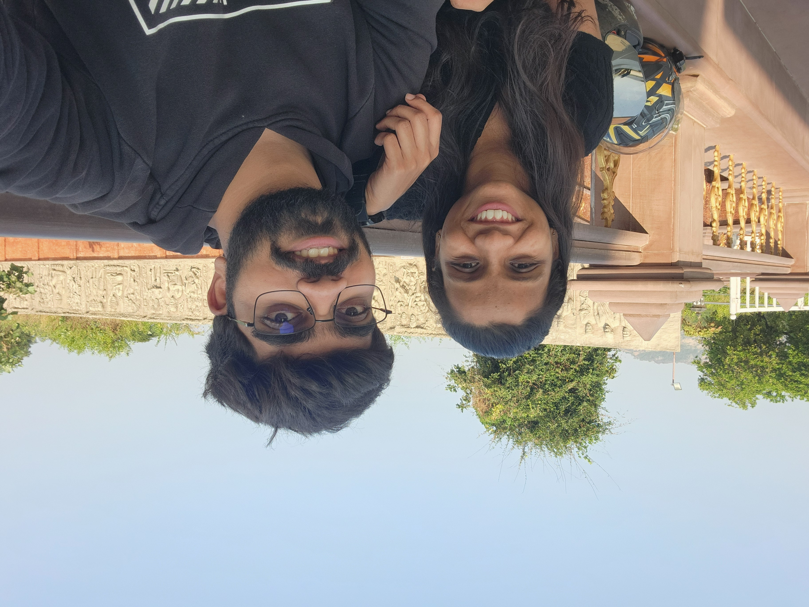

<!DOCTYPE html><html lang="en">
<head>
<meta charset="UTF-8">
<meta name="viewport" content="width=device-width, initial-scale=1.0">
<title>For Vedu </title><style>
body {
  margin: 0;
  font-family: -apple-system, BlinkMacSystemFont, "Segoe UI", Roboto, "Noto Color Emoji", Arial, sans-serif;
  background: linear-gradient(270deg, #1e1b4b, #7c3aed, #ec4899);
  background-size: 600% 600%;
  animation: gradientMove 12s ease infinite;
  color: white;
  text-align: center;
  overflow-x: hidden;
}

.section {
  min-height: 100vh;
  display: flex;
  flex-direction: column;
  justify-content: center;
  align-items: center;
  padding: 20px;
  opacity: 0;
  transform: translateY(40px);
  transition: all 0.8s ease;
}

.section.visible {
  opacity: 1;
  transform: translateY(0);
}

button {
  padding: 12px 24px;
  font-size: 18px;
  border: none;
  border-radius: 8px;
  background: #f43f5e;
  color: white;
  cursor: pointer;
}

.hidden {
  display: none;
}

/* Balloons */
.balloon {
  position: fixed;
  bottom: -120px;
  width: 50px;
  height: 65px;
  border-radius: 50% 50% 45% 45%;
  animation: float 10s infinite ease-in-out;
}

.balloon::after {
  content: "";
  position: absolute;
  bottom: -15px;
  left: 50%;
  width: 2px;
  height: 20px;
  background: white;
  transform: translateX(-50%);
}

@keyframes float {
  0% { transform: translateX(0) translateY(0); }
  50% { transform: translateX(120px) translateY(-700px); }
  100% { transform: translateX(-120px) translateY(0); }
}

img {
  width: 260px;
  margin: 15px;
  border-radius: 12px;
  box-shadow: 0 10px 25px rgba(0,0,0,0.5);
}

p {
  max-width: 600px;
  line-height: 1.6;
}

/* Typing effect */
.typing {
  border-right: 2px solid white;
  white-space: nowrap;
  overflow: hidden;
  animation: typing 3s steps(30, end), blink 0.7s infinite;
}

@keyframes typing {
  from { width: 0 }
  to { width: 100% }
}

@keyframes blink {
  50% { border-color: transparent }
}

@keyframes gradientMove {
  0% { background-position: 0% 50%; }
  50% { background-position: 100% 50%; }
  100% { background-position: 0% 50%; }
}
}


/* Hearts */
.heart {
  position: fixed;
  bottom: -80px;
  width: 20px;
  height: 20px;
  background: #ff4d6d;
  transform: rotate(45deg);
  animation: floatHeart 9s infinite ease-in-out;
  opacity: 0.9;
}

.heart::before,
.heart::after {
  content: "";
  position: absolute;
  width: 20px;
  height: 20px;
  background: #ff4d6d;
  border-radius: 50%;
}

.heart::before { top: -10px; left: 0; }
.heart::after { left: -10px; top: 0; }

@keyframes floatHeart {
  0% { transform: translateX(0) translateY(0) rotate(45deg); }
  50% { transform: translateX(-100px) translateY(-600px) rotate(45deg); }
  100% { transform: translateX(100px) translateY(0) rotate(45deg); }
}

</style></head><body><audio id="bgMusic" loop>
  <source src="music.mp3" type="audio/mpeg">
</audio><!-- Balloons (hidden initially) --><div class="heart hidden" style="left: 30%; animation-delay: 1s;"></div>
<div class="heart hidden" style="left: 50%; animation-delay: 3s;"></div>
<div class="heart hidden" style="left: 70%; animation-delay: 5s;"></div>
<div class="balloon hidden" style="left: 20%; background: #f43f5e;"></div>
<div class="balloon hidden" style="left: 60%; background: #22c55e; animation-delay: 2s;"></div>
<div class="balloon hidden" style="left: 80%; background: #3b82f6; animation-delay: 4s;"></div><div class="section visible" id="intro">
  <h1 class="typing">Sorry Vedu </h1>
  <p>I can't make much for you with my hands like you do... but I can surely do this. </p>
  <button onclick="startExperience()">Click here</button>
</div><div id="main" class="hidden"><div class="section">
  <h2>Our Beginning</h2>
  <p>This was our first photo� and honestly, at that time I didn�t know what this would turn into. It just felt like another moment, another picture. But looking back now, it feels like the start of something that slowly became one of the most important parts of my life.</p>
  
</div><div class="section">
  <h2>Our First Date</h2>
  <p>I still remember that day� we went all the way to Airoli just for that makka bhel, just the two of us. It was too spicy, I literally suffered the next day because of it  but honestly, it was still worth it. Sitting there, eating that, talking, just being with you� that�s what made it special.</p>
  
</div><div class="section">
  <h2>That One Moment</h2>
  <p>This moment� me just sleeping on your shoulder, completely at peace. You probably don�t even realise it, but that�s what you are to me � peace.</p>
  
</div><div class="section">
  <h2>Your Last Birthday</h2>
  <p>That hug� it just felt like you weren�t just someone in my life anymore. It felt like you became my person.</p>
  
</div><div class="section">
  <h2>Us Now</h2>
  <p>From then to now� everything just makes sense with you. Rides, random plans, even the small things � it all matters because it�s with you.</p>
  
</div><div class="section">
  <h2>And This Is Just the Beginning</h2>
  <p>There�s still so much more left � more rides, more memories, more everything. And I want all of it with you. Happy Birthday </p>
  
</div><div class="section">
  <h2>Just one last thing...</h2>
  <p>I love you very much, now and always. Thanks for being there with me in the hard times. </p>
  <p>Happy Birthday Tinguuu </p>
  <p>yours truly, vigi pigi </p>
</div></div><script>
function startExperience() {
  // Hide intro, show main
  document.getElementById('intro').classList.add('hidden');
  document.getElementById('main').classList.remove('hidden');

  // Play music (safe)
  const music = document.getElementById('bgMusic');
  if (music) {
    music.play().catch(() => {});
  }

  // Show balloons
  document.querySelectorAll('.balloon').forEach(b => {
    b.classList.remove('hidden');
  });

  // Spawn hearts continuously
  setInterval(() => {
    const heart = document.createElement('div');
    heart.className = 'heart';

    heart.style.left = Math.random() * 100 + '%';
    heart.style.animationDuration = (6 + Math.random() * 4) + 's';

    document.body.appendChild(heart);

    setTimeout(() => {
      heart.remove();
    }, 10000);
  }, 800);

  // Scroll animation
  const sections = document.querySelectorAll('.section');
  window.addEventListener('scroll', () => {
    sections.forEach(sec => {
      const rect = sec.getBoundingClientRect();
      if (rect.top < window.innerHeight - 100) {
        sec.classList.add('visible');
      }
    });
  });
}
</script></body>
</html>
